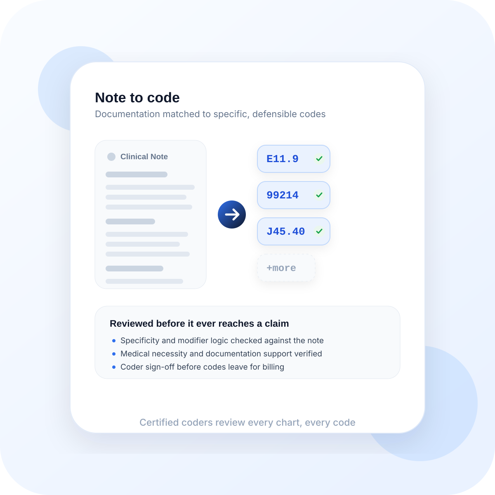

Modifier and procedural nuance
High-complexity cases often hinge on details that generic automation can miss or oversimplify.
Our advanced AI helpers surface coding risk and draft options quickly, then our seasoned operations experts validate the final output so your team can move faster with clinical precision.

We use high-performance AI to surface issues quickly, while experienced coding and compliance experts guide every final decision.
AI analyzes charts as they are signed, identifying missing modifiers or documentation gaps before they become denials.
Strict adherence to CMS coding rules, LCD/NCD guidelines, and AMA CPT standards. We protect your practice from audits.
Multiple model layers cross-reference each other to eliminate common AI hallucinations in medical terminology.
Our expert-led operations system ensures that even the most complex multi-specialty surgical cases are coded correctly.
AI reads the full clinical story, not just keywords.
Experienced compliance experts verify every high-complexity encounter.
The more complex the encounter, the more dangerous it is to rely on speed without experienced expert oversight.
High-complexity cases often hinge on details that generic automation can miss or oversimplify.
The code is only as strong as the note behind it. We focus on whether documentation supports the coding decision cleanly.
Our expert review helps reduce risk before an encounter becomes an appeal, a takeback, or an audit issue.
Catch gaps, risk points, and documentation mismatches earlier.
Route nuance to trained coders instead of forcing edge cases through automation alone.
Improve coding consistency as the workflow learns from validated corrections.
Coding quality problems often come from details that seem small in the note but become expensive in reimbursement, audit exposure, or downstream appeals.
We look at whether documentation strength matches the coding decision instead of assuming the chart and code already align.
Modifiers, laterality, episode detail, and procedural context often decide whether a claim holds up under review.
The coding layer should help the practice feel safer before submission, appeal, payer challenge, or audit pressure shows up.
These are usually the real concerns behind a coding and compliance conversation, especially for specialty groups and higher-acuity work.
Yes. That is one of the main reasons coding teams need support. We focus on the relationship between the note and the coding decision, not just the code in isolation.
It is especially valuable in higher-complexity work, where modifier logic, procedural specificity, and specialty nuance create more financial and compliance risk.
No. The goal is to bring more dependable review into the workflow without forcing edge cases through generic automation or constant manual cleanup.
Teams usually notice stronger documentation-to-code alignment, better confidence on harder encounters, and fewer downstream surprises for revenue staff.
Do not let coding errors become a liability. Pair the speed of advanced AI with the reassurance of expert review.
Strengthen Coding Confidence